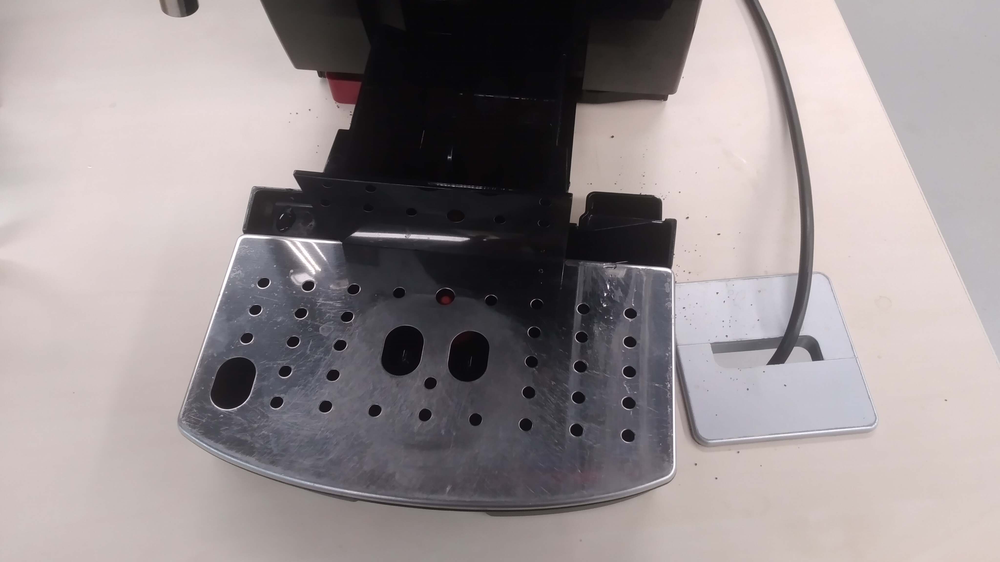
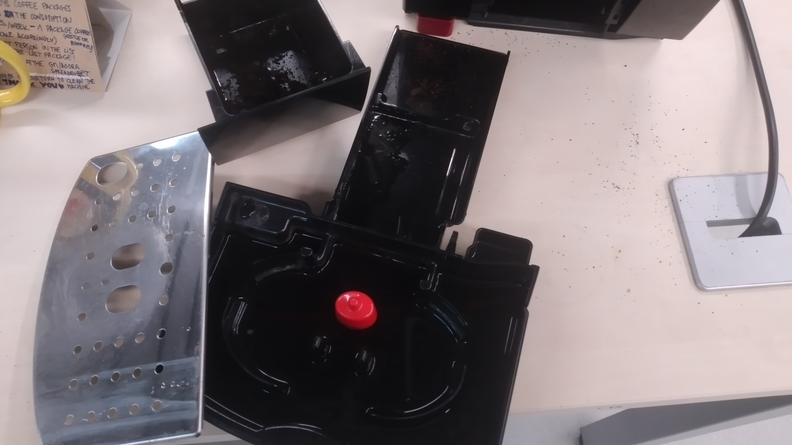
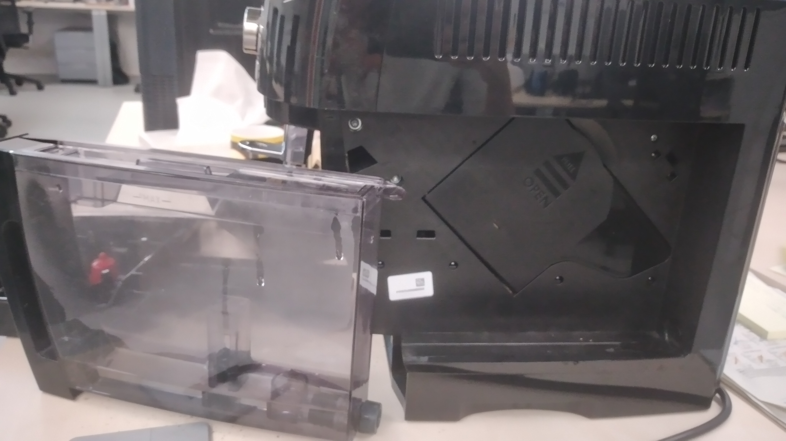
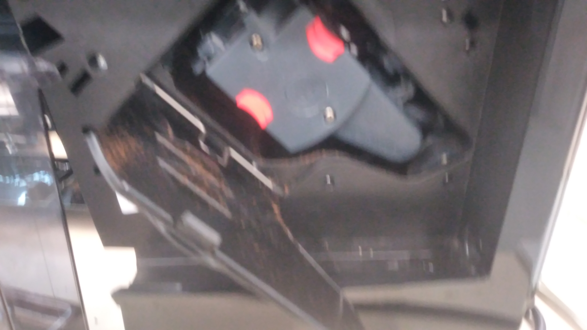
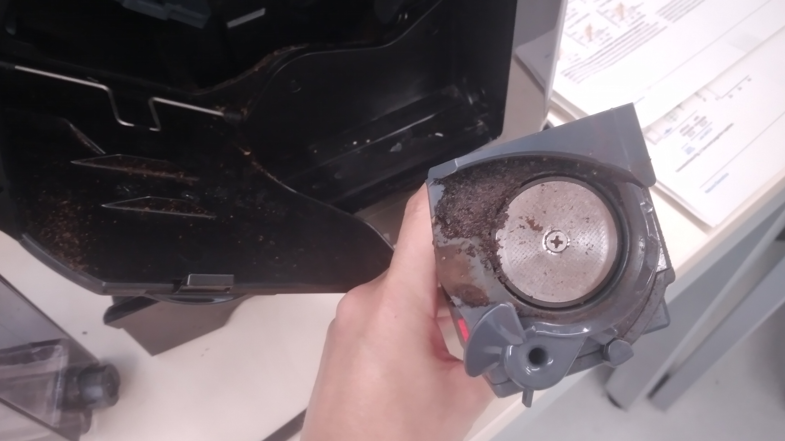

Info for bbg-coffee drinkers¶
System for the coffee¶
- Every week there is one person responsible for cleaning the coffee machine.
- The list is here in the same group meetings & agora sheet, on the right side.
- The same list works for cleaning the coffee machine (weekly, our names are on it) and buying coffee (every time we buy we write our name).
- Anytime there is one package left of coffee, we tell the next person in the list, and once this person buys coffee we will write the name on the same week this person bought the coffee. Once there is the last coffee package open, we tell the next person, and so on.
- Each one of us will buy the coffee according to our coffee consumption.
The ratio is:
5 coffees per week - buy 1 kg of coffee (and scale accordingly)
Important notes¶
- The 5 coffees are average, just try to make an approximation, doesn't need to be super exact. You can use the amount of coffees you've been taking last month, for instance, and make the mean per week.
- It is a shared responsibility to know if we are using the last coffee package. I recommend telling the next person in the list whenever we are opening the last package.
- It is a shared responsibility to clean the coffee machine every week. I recommend you to annotate in your calendar your turn to clean the coffee machine. The list is repeated several times, so you can annotate it for any time.
- If you can't clean the coffee machine that week, you can exchange your turn with another person.
- Only Monica, Erika and Martina have permissions to edit the spreadsheet. But you can put comments on the cells.
- Some brands that are OK:
- Nestle Bonka.
- Bon preu
- Bellarom (the brand from LidL)
- With this system we would buy like once a year, enough time to find where to buy these brands
- If you drink coffee very rarely, you don't need to enter the system, we can invite you

- Feel free to add or remove yourself from the list whenever you change your coffee consumption routine. Just tell Monica and she will modify the list in the spreadsheet.
How to clean the coffee machine¶
-
Turn off the coffee machine and unsamble all the parts shown in the pictures below, in that order:
1  2 
3  4 
5 
To extract this inner part (coffee grinder), press the red buttons and pull out.
-
Wash with soap all the parts EXCEPT the grinder. You can use the sink in the EBL, ask any member of the wet lab. The grinder is cleaned just by running water (NO SOAP).
- Rinse all pieces and dry it with paper.
- Put back all the pieces, in the inverted order in which you took them off.
Remember to tidy up a little bit, for any remaining coffee leftovers on the table.
Thanks a lot!
Slack coffee bot¶
It is easy to forget when it is your turn to clean the coffee machine, many of us have been there. So, to help you
remember, we have a Slack bot user called @Coffee reminder BOT that sends a reminder every Monday of the week to
the person who is responsible for cleaning the coffee machine. This bot sends a direct message to the individual person.
The source code as well as the instructions for using it can be found in the Coffee bot GitHub repository, maintained by @CarlosLopezElorduy.
Every time a new person joins or exits the lab, a specific file within the code of the bot needs to be updated. If this happens, please contact any of the people in the references below, and they will update the required information.
References¶
- Monica
- Martina
- Erika
- Carlos